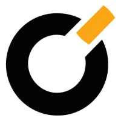

빅 BIC
빅(BIC)은 1945년 마르셀 비크가 프랑스에서 설립한 일회용 소비재 브랜드다. 볼펜·라이터·면도기를 중심으로 저가·대량생산 일상용품을 만들며, 1950년 출시한 BIC Cristal 볼펜은 역사상 가장 많이 팔린 펜으로 꼽힌다.
최종 업데이트

빅은 어떤 브랜드인가
빅(BIC)은 1945년 마르셀 비크가 프랑스에서 설립한 일회용 소비재 브랜드다. 볼펜·라이터·면도기를 중심으로 저가·대량생산 일상용품을 만들며, 1950년 출시한 BIC Cristal 볼펜은 역사상 가장 많이 팔린 펜으로 꼽힌다.
빅은 어떻게 봐야 할까
빅은 일회용 볼펜·라이터·면도기로 '단순하고 믿을 수 있는 소비재'라는 포지셔닝을 세계화한 브랜드다. 헤리티지, 핵심 제품, 모회사 구조를 함께 보면 홈·라이프스타일 안에서의 위치가 또렷해진다.
빅은 어떻게 시작되고 성장했나
빅(BIC)은 1945년 프랑스에서 볼펜의 생산 및 판매를 목적으로 설립되었다. 합리적인 가격과 고품질의 볼펜 생산을 시작으로 필기구에 혁명을 일으켰고, 1972년 이후 라이터와 면도기 등 제품의 다각화에 성공하였다.
현재 160개 국가에서 판매되고 있는 프랑스의 대표적인 글로벌 문구 및 생활용품 브랜드이다.
빅의 브랜드 아이덴티티는 무엇인가
빅(BIC)의 창립자 마르셀 비슈(Marcel Bich)는 "좋은 상품을 저렴한 가격에 모든 사람에게 제공하겠다”라고 말했다. 빅(BIC)은 제품의 기본적인 기능과 합리적인 가격에 집중하여 실용적인 생활용품 브랜드로 그 가치를 인정받고 있다.
또한, 환경문제에도 적극적으로 앞장서며 빅(BIC)의 철학을 모든 제품에 녹여내고 있다.
빅의 대표 제품과 서비스는 무엇인가
볼펜 등 필기구, 일회용 라이터, 면도기를 3대 축으로 한다. 문구·아트 제품 라인도 운영하며 전 세계에 대량 유통된다.
빅은 누가 만들고 이끌었나
창업자는 마르셀 비크(Marcel Bich)와 에두아르 뷔파르다. 사명 BIC은 비크의 이름에서 따왔다.
빅은 지금 어떤 상태인가
더 알아둘 것
프랑스 클리시에 본사를 둔 Société BIC이 운영하며, 볼펜·라이터·면도기를 3대 축으로 한다.
빅 연혁 — 주요 사건은 언제였나
빅 로고는 어떻게 변해왔나
대표 로고대표 브랜드 마크
BI/CI 아카이브보관 이미지 1자주 묻는 질문
빅는 어느 나라 브랜드인가요?
빅는 프랑스의 홈·라이프스타일 브랜드입니다.
빅는 언제 설립되었나요?
빅는 1945년 설립되었습니다.
빅의 브랜드 아이덴티티는 무엇인가요?
빅(BIC)의 창립자 마르셀 비슈(Marcel Bich)는 "좋은 상품을 저렴한 가격에 모든 사람에게 제공하겠다”라고 말했다.
빅의 대표 제품은 무엇인가요?
볼펜 등 필기구, 일회용 라이터, 면도기를 3대 축으로 한다.
빅는 현재 어떤 상태인가요?
국가: 프랑스; 본사: 클리시(Clichy); 산업: 홈·라이프스타일
빅의 창업자는 누구인가요?
빅의 창업자는 Marcel Bich입니다(위키데이터 기준).
빅의 본사는 어디에 있나요?
빅의 본사는 클리시에 있습니다(위키데이터 기준).
출처와 검증
빅 관련 참고: 공식 웹사이트 · 위키데이터 Q795981 · 한국어 위키백과 · 영어 위키백과. 브랜드명은 한글과 원어를 함께 표기하되 데이터에 없는 표기는 만들지 않습니다. 기원 국가·설립연도는 검수된 정의문에서 확인된 값을 우선하고, 없을 때만 공식 웹사이트 URL이 일치하는 위키데이터 개체의 값을 씁니다. 위키데이터 값은 2026-09-07 기준입니다.